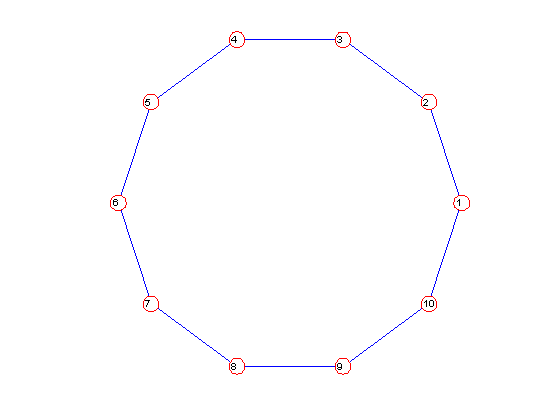
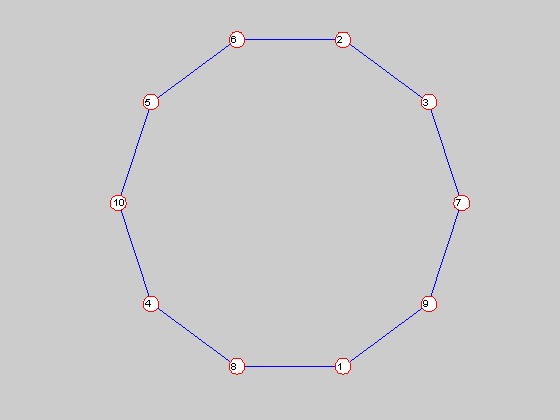
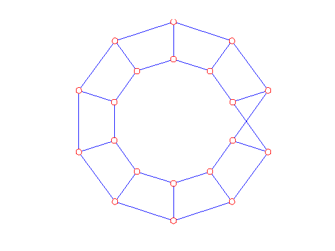

Checking graph isormorphism in Matgraph
We show how to determine if two graphs are isomorphic and, if so, how to find the permutation that transforms one into the other.
Contents
Cycle graph
Create two copies of a cycle on 10 vertices, but randomly renumber the second.
g = graph; h = graph; cycle(g,10); cycle(h,10); renumber(h,random(permutation(nv(h)))); figure(1); clf; ndraw(g); figure(2); clf; ndraw(h); [yn,p] = iso(g,h) renumber(g,p) if g==h disp('Graphs are the same') else disp('Graphs are different') end
yn =
1
(1)(2,9,4,3,7,5)(6)(8,10)
Graphs are the same
  Large, vertex regular graph
The bucky graph is a vertex transitive graph with 60 vertices. We make two copies (one that is randomly renumbered) and check they are the same.
bucky(g); bucky(h); renumber(h,random(permutation(nv(h)))); [yn,p] = iso(g,h) renumber(g,p) if g==h disp('Graphs are the same') else disp('Graphs are different') end
yn =
1
(1)(2,28,6,55,16,24,27,45,8,21,13,43,54,19,12,35,49,56,4,32,52,57,47,51,60,15,3,30,11,41,10,33,59,58,53,40,37,44)(5,34,39,42,9,46,38,18)(7,14,25,36,23,20,29)(17,31)(22,48)(26)(50)
Graphs are the same
Standard random graph
We generate a standard Erdos-Renyi random graph and a randomly renumbered copy, and then verify they are isomorphic.
random(g,100,0.5) copy(h,g) renumber(h,random(permutation(nv(h)))); [yn,p] = iso(g,h); renumber(g,p) if g==h disp('Graphs are the same') else disp('Graphs are different') end
Graphs are the same
Random regular graph
We generate a random 3-regular graph and a randomly renumbered copy, and then verify they are isomorphic.
random_regular(g,100,3); copy(h,g); renumber(h,random(permutation(nv(h)))); [yn,p] = iso(g,h); renumber(g,p) if g==h disp('Graphs are the same') else disp('Graphs are different') end
Graphs are the same
Random tree
We generate a random tree and a randomly renumbered copy, and then verify they are isomorphic.
random_tree(g,100); copy(h,g); renumber(h,random(permutation(nv(h)))); [yn,p] = iso(g,h); renumber(g,p) if g==h disp('Graphs are the same') else disp('Graphs are different') end
Graphs are the same
Two ways to make a grid
We generate a grid graph in two different ways. The graphs are not equal, but they are isomorphic.
grid(g,6,3); grid(h,3,6); if g==h disp('Graphs are the same') else disp('Graphs are different') end [yn,p] = iso(g,h) renumber(g,p) if g==h disp('Graphs are the same') else disp('Graphs are different') end
Graphs are different
yn =
1
(1)(2,4,10,11,14,6,16,12,17,15,9,8,5,13,3,7)(18)
Graphs are the same
Mobius and non-Mobius ladders are not isomorphic
The Mobius ladder on 20 vertices and the Cartesian product of a 10-cycle and an edge are both 3-regular graphs on 20 vertices. But they are not isomorphic.
mobius(g,20); c10 = graph; cycle(c10,10); k2 = graph; add(k2,1,2); cartesian(h,c10,k2); figure(1); clf; draw(g); distxy(h); figure(2); clf; draw(h); [yn,p] = iso(g,h) if yn disp('Graphs are isomorphic') else disp('Graphs are not isomorphic') end
Optimization terminated: relative function value
changing by less than OPTIONS.TolFun.
Embedding score = 20.7351
Elapsed time is 2.634896 seconds.
yn =
0
()
Graphs are not isomorphic
 
Release storage
free(g); free(h); free(c10); free(k2);